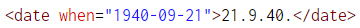
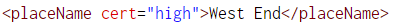
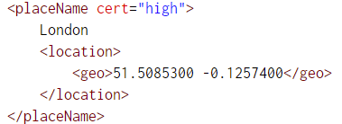
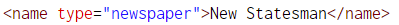
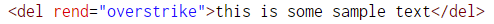
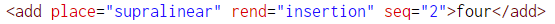
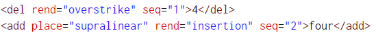
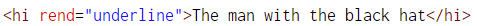

Dates, places and editorial
Aims
To enrich our TEI document with details such as dates, places and Orwell’s editorial decisions
To consider the usefulness of the components of the text which we decide to include in our TEI XML file
So far
At this point, you have a TEI XML file which contains:
- A TEI header with information about the diaries
- The text from the diaries in the <text> tag with the body, paragraphs and page numbers.
If you are a University of Warwick student then you can download a suitable TEI XML file from here.
Enrichment
We have included basic information about the structure of the text. Pages and paragraphs are important, but there is much more in the images such as dates, places, newspapers, deletions and insertions.
Consider the importance of each.
Dates are particularly important in diaries as mood, circumstance and, as in the case of a period like the second world war, considerable changes in global and possibly local events.
Place helps situate and offer interpretive insights in humanities work [ref to spatial turn].
Entities such as newspapers or people may indicate relationships or, as in this case, typical left leaning periodicals which are read by Orwell.
Deletions and insertions offer a reflection of the author - why did Orwell delete sections at the end of diary segment what does that tell you about his state of mind?
Each helps us to gain a richer understanding of the source material and allow us to improve our scholarship. Furthermore, tagging these items enables them to be machine readable. If we had a fully TEI encoded copy of the entire diary then we could, possibly, count the references to newspapers across the entire war period sorted by month, or perhaps all the text deleted by Orwell which we feed into a Natural Language Processing AI model to identify the lexical structures most disliked by the author.
Not to mention, we could also create a rich scholarly website enabling academics to view and investigate the diary in new, interesting and stimulating ways, allowing for new academic inquiries. A good example of this are the William Godwin Diaries.
Activity Two
Goal
We want to add dates, places, deletions and additions to the Orwell Diary TEI XML files.
Steps
- Add the date element to dates in the text.
- Identify place names and encapsulate each place name in the placeName element. There relevant indicate your certainty that this is a location. You may want to add latitude and longitude co-ordinate (see help below).
- Mark up newspaper names.
- Indicate text which has been deleted using the del element.
- Indicate inserted text with the add element. Be sure to provide a place for the addition and how it should be rendered.
We have a few new elements to look at.
Dates are marked up using the date element. The element has a when attribute to record the actual date. This make sense if we want to accurately record dates even when some has written ‘midweek’ or ‘term 2 - week 9’. For our purposes, we can record a date as shown below.

Place names indicates, to no surprise, the name of a place. The name of the place should be within the PlaceName element. You can add an attribute to indicate how certain you are that this is a placename.

You may also want to add the spatial co-ordinates of a place. The geo element, which can be placed in the location element within placeName, lets you specify the geolocation of the place. For instance, this would look like the below.

For completeness, you may want to indicate the project of the co-ordinates (discussion of this goes beyond this page). We need not worry in our case because our co-ordinate projection is WGS84 and co-ordinates within geo are assumed to follow WGS84, see the documentation on the varieties of location.
TEI documentation: <placeName>
Use the name element with the attribute type to indicate a newspaper. In Orwell’s diary this may look something like.

You can encode deleted text via the del element. The rend attribute indicates how the deletion should be displayed when the document is rendered into PDF or HTML. For our purposes, we will treat deletions as an overstrike.

Text which has been added to the document is represented using the add element. We would usually indicate the position of the addition using the place attribute and render it as an insertion in outputs. For example, adding the word four by writing it above would be.

Note the place indication of ‘supralinear’. I have also indicated that this is the second in a series of actions using the seq attribute. In my document, I assume the number 4 is removed and then the word four is added above.

Finally, we can show text is highlighted (hi) by underline like so.
